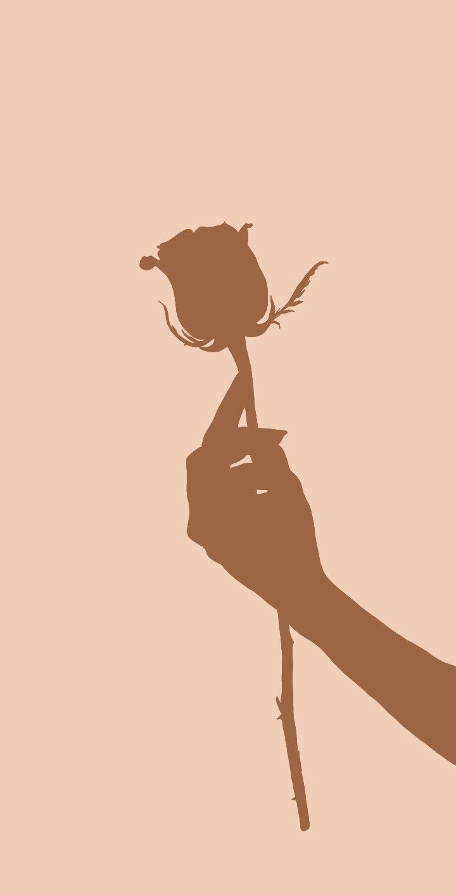

Je m'appelle Nzola Samba Love une etudiante en informatique originaire de Kinshasa, en Republique démocratique du Congo.
Ma passion pour la technologie s'est développée avec le temps, au fil des découvertes, des essais, des bugs... et surtout de cette envie constante de comprendre et créer
Mais au-delà du code, je suis aussi animée par des passions plus intérieures : la lecture, la philosophie et la psychologie humaine. J’aime réfléchir, questionner, écouter, comprendre. Ces intérêts m’aident à mieux percevoir le monde… et à créer avec plus de sens.
Au cœur de tout ça, il y a ma foi. Je crois que Dieu est le fondement de ma vie, de mes idées et de mes projets. Il m’inspire à avancer avec paix, discipline, humilité et excellence, jour après jour.

Je crois en un équilibre entre rigueur et sensibilité, entre logique et intuition.
Et chaque jour, j’essaie de construire mon parcours avec ces valeurs-là : curiosité, simplicité, profondeur, et cette touche de créativité bienveillante qui me ressemble.